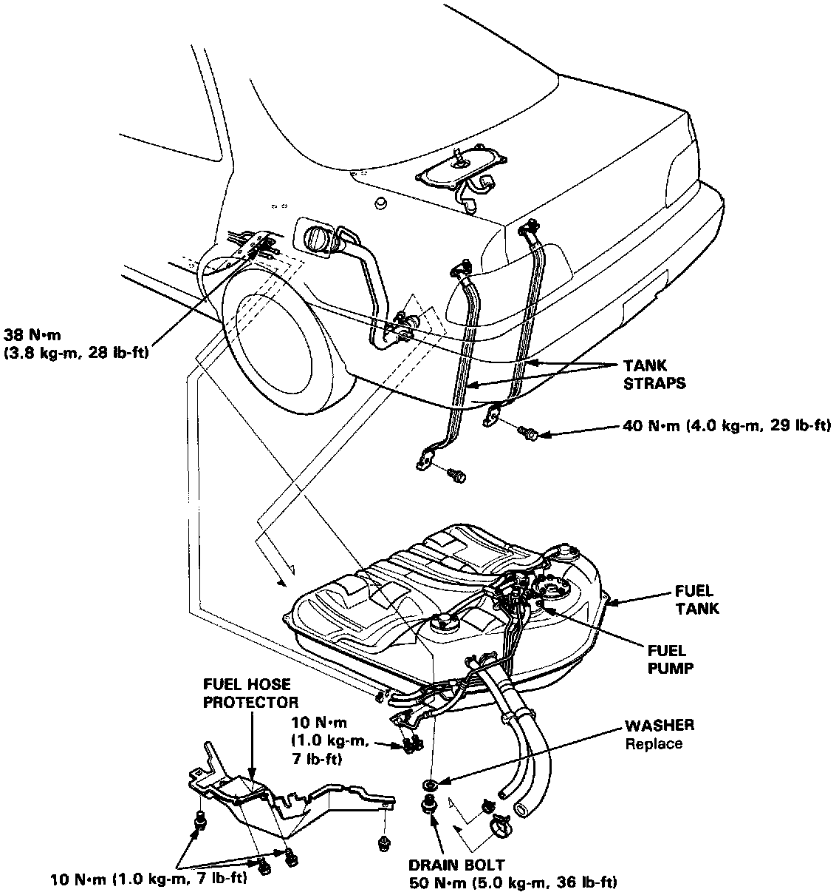

Fuel Tank: Service and Repair

Fuel Tank Replacement
WARNING: Do not smoke while working on fuel system. Keep open flame away from work area.
1. Raise the car.
2. Remove the drain bolt and drain the fuel into an approved container.
3. Disconnect the connectors from the fuel gauge sending unit and the fuel pump.
4. Disconnect the hoses.
CAUTION: When disconnecting the hoses, slide hack the clamps, then twist hoses as you pull to avoid damaging them.
5. Place a jack, or other support, under the tank.
6. Remove the strap bolts and nuts, and let the straps fall free.
7. Remove the fuel tank.
NOTE: The tank may stick on the undercoat applied to its mount. To remove, carefully pry it off the mount.
8. Install a new washer on the drain bolt, then install parts in the reverse order of removal.